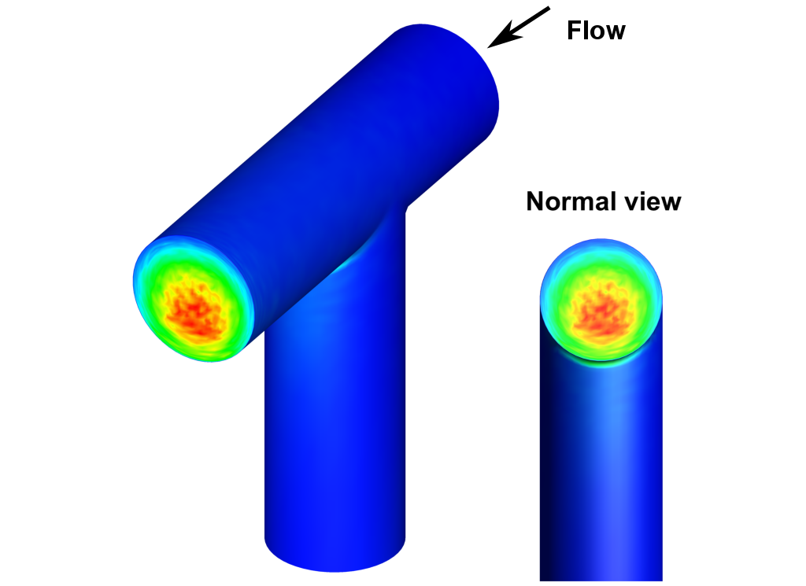
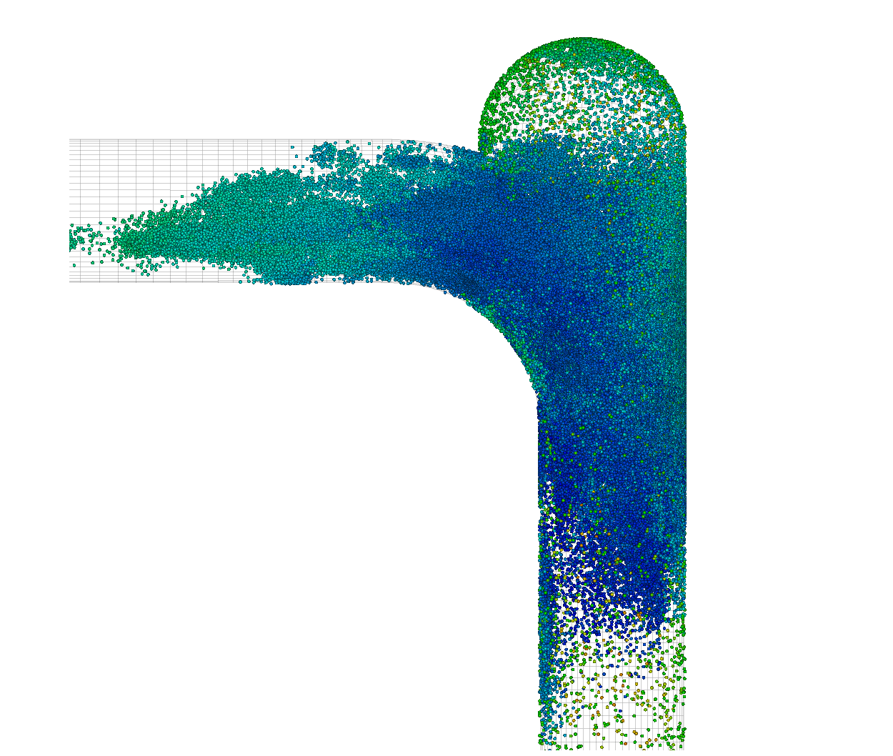
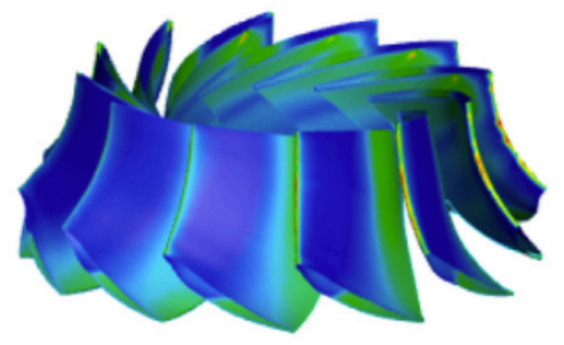

Erosão, Desgaste e Integridade de Dutos
Estudos voltados à previsão e mitigação de erosão em tubulações e equipamentos industriais, com foco em confiabilidade, desempenho e vida útil operacional.
O LaSCI (Laboratório de Simulações Computacionais Inteligentes) é dedicado ao desenvolvimento e aplicação de modelagem computacional, simulação numérica e técnicas de inteligência artificial para resolver problemas complexos de engenharia.
Atuamos em projetos de pesquisa, formação de recursos humanos e colaboração com instituições acadêmicas e industriais, conectando ciência fundamental a soluções tecnológicas de impacto.

Estudos voltados à previsão e mitigação de erosão em tubulações e equipamentos industriais, com foco em confiabilidade, desempenho e vida útil operacional.

Simulação numérica de escoamentos complexos, multifásicos e turbulentos, aplicada à compreensão de fenômenos fundamentais e desafios da engenharia.

Investigações em eficiência de processos, energias renováveis e sustentabilidade, conectando modelagem computacional a soluções para a transição energética.